表單驗證器¶
一、何謂「表單驗證器」?¶
組織的表單會因不同業務流程，而有不同的商業邏輯，UOF X透過「表單驗證器」的機制，你可以在規劃表單內容時，根據每張表單的驗證規則，自行加入不同的驗證器；透過驗證器能夠串接外部系統，以進行特定的表單驗證，當申請者或簽核者在送出表單時，系統會自動執行驗證器所設計的驗證規則，並檢查所填寫的表單資料是否符合預設的規則和條件，以下進一步說明表單驗證器的特性：
-
滿足多種驗證方式：
UOF X的表單驗證器支援多種驗證方式，包括格式驗證、必填欄位驗證、範圍驗證、正則表達式驗證等，這些驗證方式可以根據具體需求靈活選擇和組合，以確保表單資料的正確性。 -
自訂驗證規則：
使用者可以自定義驗證規則，根據具體業務需求進行驗證設定，這使得驗證器非常靈活，可以適應不同的表單類型和驗證需求。 -
驗證錯誤提示：
當驗證器檢測到表單資料不符合驗證規則時，會提供相應的錯誤提示，這有助於使用者快速發現和修正表單中的錯誤資料，提高資料輸入的準確性和效率。 -
外部系統驗證整合：
UOF X的表單驗證器還支援與外部系統進行驗證的整合。使用者可以設定驗證器與外部系統進行交互，進行額外的資料驗證，如查詢資料庫、調用外部API等，這擴展了驗證器的功能和靈活性。
二、應用情境¶
各行各業的表單，都有不同的商業邏輯，列舉下方幾個不同行業中，不同表單可能會應用表單驗證器的情境：
-
銀行業-開立銀行帳戶表單：在填寫表單時，系統可以進行身份驗證，檢查申請人的身份證件和個人資料的一致性，以確保帳戶開立的準確性和合法性。
-
醫療業-醫療申請表單：在提交醫療申請表單前，系統可以驗證醫療保險資格、診斷碼和醫療處方的正確性，以確保申請人符合相關條件並獲得適當的醫療服務。
-
零售業-訂單資訊表單：在業務提交訂單時，系統可以驗證庫存數量、產品價格和配送地址的有效性，以確保訂單的準確性和即時性。
-
教育業-學生註冊表單：在學生註冊過程中，系統可以驗證學生的身份、學歷資格和報讀課程的相容性，以確保學生的註冊資訊準確且符合學校的要求。
-
政府機構-申請表格：在申請政府補助、許可證或執照時，系統可以進行資格驗證、文件完整性檢查和申請者身份驗證，以確保申請程序的合法性和正確性。
透過上述這些情境，可以了解表單驗證的目的是確保填寫的資料符合特定的標準和要求，並避免錯誤、不完整或非法的資料進入系統。透過在送出表單前進行資料驗證，組織可以確保所收集到的資訊的準確性和可靠性，並提供更好的服務品質和使用者體驗。
三、建立表單驗證器¶
表單驗證器類別¶
首先，組織可以根據自身的需求和表單驗證器的複雜度進行適當的分類，分類的目的是讓維護人員能夠更輕鬆地找到和管理驗證器，提高日常維護的效率。在建立分類結構時，建議與相關的業務團隊或負責人進行溝通，確保分類方式符合組織的實際需求，以下提供一些常見的分類方式：
-
依 驗證類型 分類：
將驗證器按照驗證的具體類型進行分類，例如：可以將所有的格式驗證器歸為一類，所有的必填驗證器歸為一類，所有的邏輯驗證器歸為一類，以此類推。這種分類方式可以讓維護人員快速找到相關的驗證器並進行修改或新增。 -
依 表單類別 分類：
根據表單的類別或功能將驗證器進行分類，例如：財務相關的驗證器放在一個分類下，系統資訊相關的驗證器放在另一個分類下，以此類推。這種分類方式可以根據不同的業務需求對驗證器進行分組，方便相關團隊或負責人進行維護和管理。 -
依 外部系統 分類：
將驗證器按照所串接的外部系統來源進行分類，例如：將與人事系統的驗證器放在一個分類下，將與財務系統的驗證器放在另一個分類下，以此類推。這種分類方式可以讓維護人員根據不同的外部系統來源進行相應的設定和管理。

管理者首頁>串接服務>表單驗證器
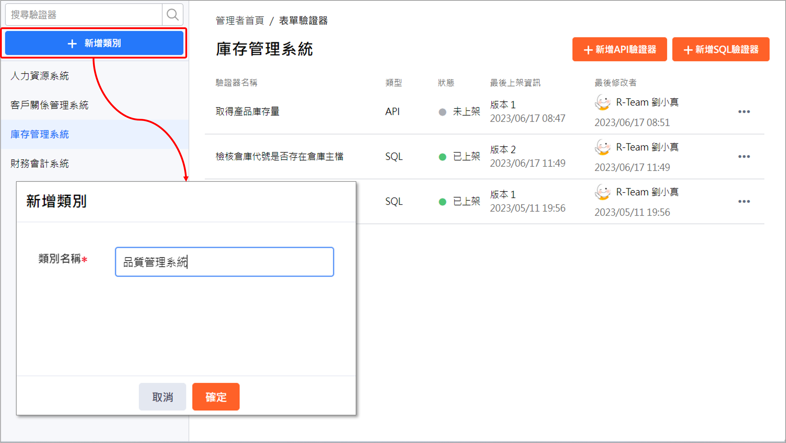
支援SQL、API驗證器¶
-
SQL驗證器：
SQL驗證器意指通過執行SQL指令來對表單資料進行驗證，適用於需要對表單資料進行複雜的查詢和比對的情境，例如：檢查表單資料是否符合特定條件、查詢資料庫中的相關資料是否存在、對表單資料進行格式化或轉換等。SQL驗證器提供了彈性和自由度，開發人員可以使用SQL指令進行各種複雜的資料驗證操作。 -
API驗證器：
API(應用程式介面)驗證器允許系統與外部系統進行整合，並透過呼叫外部系統的API來進行資料驗證，此方式的好處是可以利用外部系統已經存在的驗證機制，例如第三方身份驗證服務或其他外部資料庫，來驗證表單資料的正確性和合法性，這樣可以節省開發和維護自己的驗證邏輯，同時也可以利用外部系統的強大功能和安全性。
因此，組織可以根據表單的具體驗證需求、資源和技術能力以及整合性與彈性的考慮因素來決定使用「SQL驗證器」或「API驗證器」；這兩種驗證器都提供了強大的功能，可以確保表單資料的正確性和合法性。
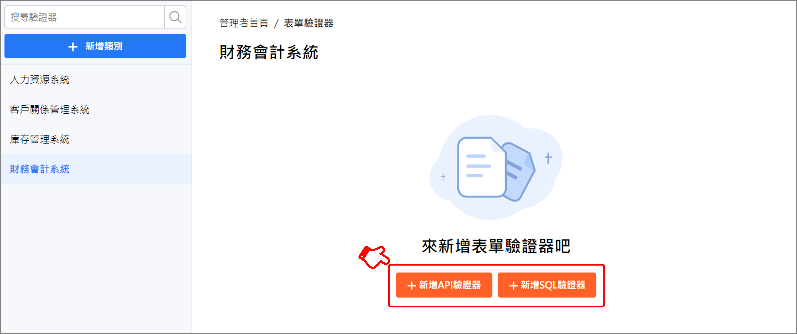
上架/下架程序¶
在使用表單驗證器之前，BPM管理者 需要進行一個重要的步驟，即「上架」表單驗證器；「上架」 意指是將驗證器設定為 可用 狀態，只有在表單驗證器上架後， 表單設計者 才能在設計表單時選擇並使用這些驗證器。
若你需要維護表單驗證器，例如：進行更新或修正，則需要進行「下架」表單驗證器；「下架」 意指將驗證器設定為 不可使用 的狀態，當表單驗證器下架時，表單設計者也將無法在表單設計時看到該驗證器的選項。透過下架表單驗證器的方式，可以確保在進行維護作業期間，表單設計者不會誤用或選擇到需要維護的驗證器。
因此，系統透過引導性步驟，協助管理者在建檔或維護的過程中，順利進行表單驗證器的上架和下架操作，這些步驟包含 「基本設定→設定驗證器→參數設定→檢閱並上架」 ，清晰地指導管理者完成相應的程序，使其能夠有效地掌握上架/下架表單驗證器的流程。
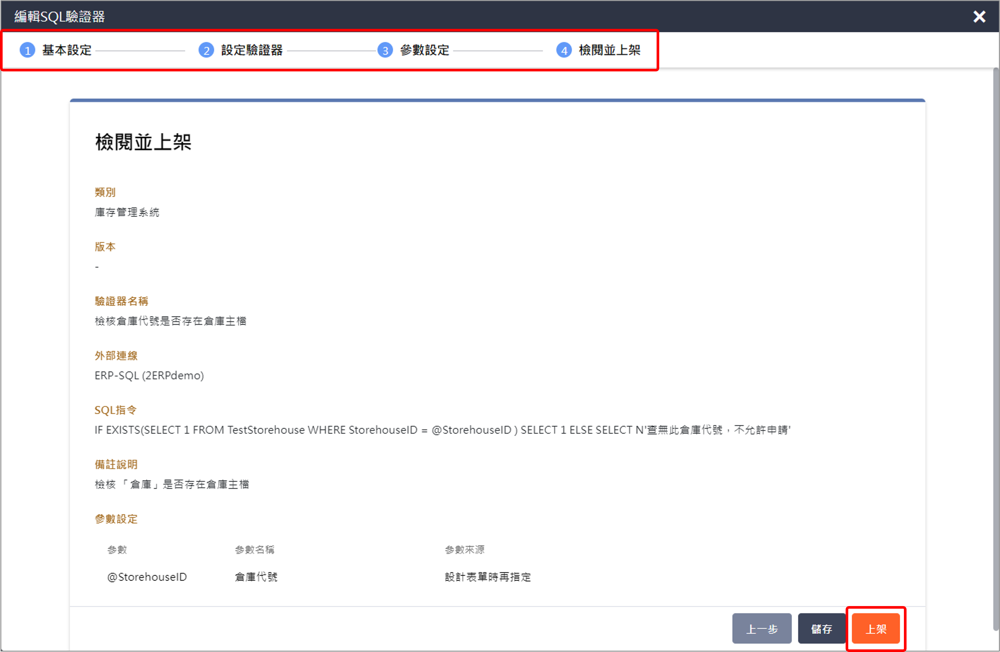
透過上述說明，系統透過表單驗證器上架/下架的程序，我們可以確保驗證器的可用性，使其能夠被表單設計者正確地應用於表單設計中，同時也提供了一個安全的維護機制，當有人在維護表單驗證器時，確保表單設計者也不會受到維護作業的干擾或錯誤，因而影響到設計表單的作業。
在接下來的兩個章節中，我們將針對 「SQL驗證器」 和 「API驗證器」 詳細說明，以便你能夠更好地運用這些功能來提升表單驗證的效果和準確性。
四、SQL驗證器¶
Step1：基本設定¶
- 驗證器類別：選擇適合的驗證器類別，以將驗證器進行分類和組織。
- 驗證器名稱：替SQL驗證器指定一個描述性且易於識別的名稱。
- 外部連線：選擇你所要的外部連線。

Step2：設定驗證器¶
- SQL指令：你可以編寫SQL指令來驗證表單資料的商業邏輯，也可以在SQL指令中設定參數，並在下一個步驟再指定參數來源。
- 備註說明：你所填寫的內容，表單設計者在設定流程站點驗證時，可以看到此則備註說明。
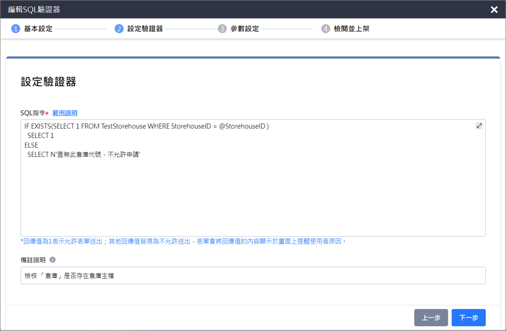
Step3：參數設定¶
- 參數名稱：你可以為每個參數命名，用來提供給表單設計者在站點加入驗證器時，可以清楚識別所要設定的驗證器項目，建議取一個容易理解用途的名稱。
- 參數來源：你可以根據表單的特定需求，從以下三種不同的來源中獲取參數值。
| 來源名稱 | 定義 |
|---|---|
| 單據資訊 | 你可以從單據的相關資訊中取得參數的值，例如：申請者/實際簽核者(帳號、姓名、員工編號、主要部門職稱代號、主要部門代號)、申請時間、表單發佈版本，這些資訊可以用於商業邏輯的判斷，以確保表單的合法性。 |
| 常數(固定值) | 你可以直接指定固定的值作為參數的來源，這些值在驗證過程中是不變的，可用於特定的驗證需求。 |
| 設計表單時再指定 | 若選擇此選項，表示你必須在設計表單時，將站點綁定驗證器時，必須要明確指定其參數來源為表單的哪一個欄位，換句話說，我們可以將使用者所填寫的資料即時應用於驗證作業。 |
- 支援[測試]功能：
- 當你進行參數設定後，你可以選擇進行[測試]，在測試過程中，你需要提供具體的參數值，這些參數值將被傳遞給驗證器進行驗證；系統會模擬實際呼叫驗證器的過程，並回傳驗證結果。
- 透過測試功能，管理者可以立即檢查驗證器的設定是否正確。他們可以使用各種不同的參數值進行測試，並觀察系統返回的回傳值。這使得管理者能夠確保驗證器在實際應用中的表現符合預期，並及時調整和修正驗證器的設定。
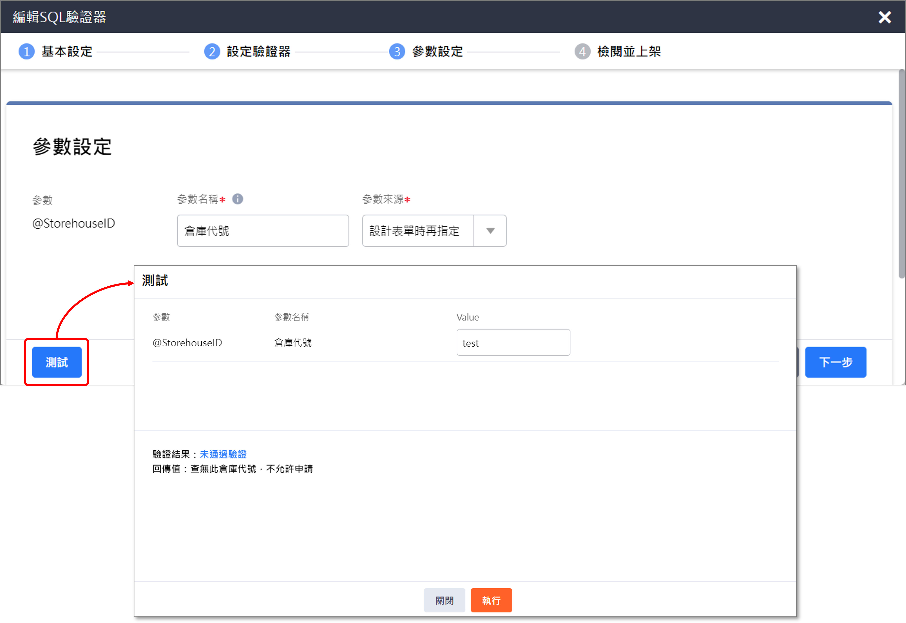
Step4：檢閱並上架¶
在最後的檢閱步驟，你可以對驗證器進行檢查，確保所有設定正確無誤；如果確定沒有問題，你可以選擇[上架]驗證器，這樣表單設計者才能在設計表單時選擇並使用這些驗證器。
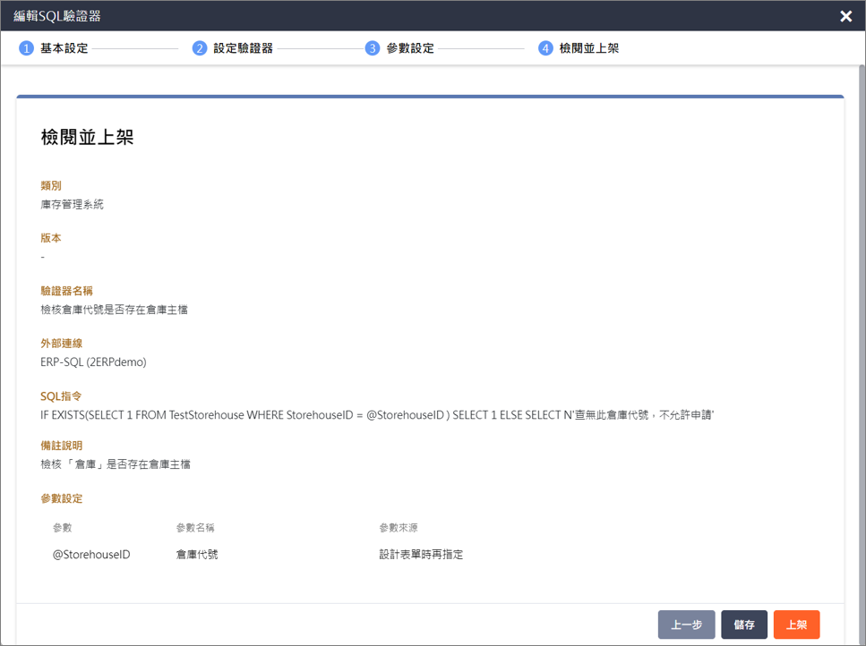
五、API驗證¶
Step1：基本設定¶
- 驗證器類別：選擇適合的驗證器類別，以將驗證器進行分類和組織。
- 驗證器名稱：替API驗證器指定一個描述性且易於識別的名稱。
- 外部連線：選擇你所要的外部連線。
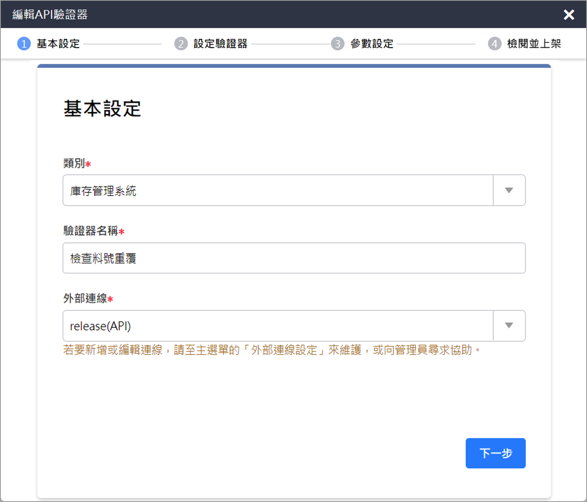
Step2：設定驗證器¶
- API URL：你可以設定要驗證的目標API位址(URL)，此URL是指向外部系統的API端點，UOF X將會透過此URL進行資料驗證；若UOFＸ需要傳遞特定參數給外部API時，也可以在下一個步驟新增所需要的參數清單且對應指定其參數來源。
-
Method：提供兩種常見的呼叫API的請求方法，選擇使用哪種方法取決於具體的需求和安全性考量。
- Get方法：用於向伺服器請求取得指定資源的內容，常應用於取得資源的操作，例如瀏覽網頁、讀取文件或檢索資料。
- 參數傳遞：Get方法將參數以查詢字串(query string)的形式附加在URL的尾部，例如：http://example.com/page?param1=value1¶m2=value2。
- 可快取：由於Get方法的請求是無副作用的（即不會對資源進行修改），可以被瀏覽器和代理伺服器快取，從而提高效能。
- 限制：由於URL的長度和某些伺服器的限制，Get方法的資料傳遞容量有限。
- Post方法：用於向伺服器提交資料，並請求處理資料，通常用於新增、更新或刪除資源，例如提交表單、發佈文章或執行某些操作
- 參數傳遞：Post方法將參數和資料包含在請求的主體（body）中，而不是附加在URL上，因此可以傳遞大量資料。
- 安全性：相對於Get方法，Post方法的資料傳遞較為安全，因為參數不會顯示在URL中，而是隱藏在請求的主體中。
- 非快取：Post方法的請求通常不會被瀏覽器和代理伺服器快取，因為它可能對資源進行修改。
- Get方法：用於向伺服器請求取得指定資源的內容，常應用於取得資源的操作，例如瀏覽網頁、讀取文件或檢索資料。
-
通過驗證的回傳值：你可以根據表單的驗證規則，自訂API的某個回傳值做為通過驗證的判斷依據，這意味著當表單發送API請求後，它會解析回傳的資料並檢查是否存在你所指定的通過驗證值；只有在回傳值符合設定的通過驗證值時，該表單才視為通過驗證。
-
備註說明：你所填寫的內容，表單設計者在設定流程站點驗證時，可以看到此則被註說明。
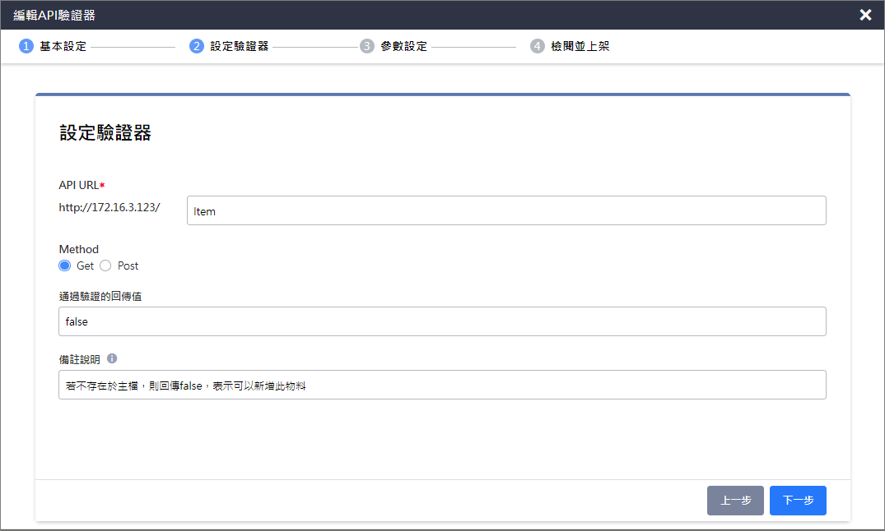
Step3：參數設定¶
- 參數名稱：根據組織所需要的API驗證器邏輯，自行新增需要傳遞的參數清單，你可以為每個參數命名，用來提供給表單設計者在站點加入驗證器時，可以清楚識別所要設定的驗證器項目，建議取一個容易理解用途的名稱。
- 參數來源：你可以根據表單的特定需求，從以下三種不同的來源中獲取參數值。
| 來源名稱 | 定義 |
|---|---|
| 單據資訊 | 你可以從單據的相關資訊中取得參數的值，例如：申請者/實際簽核者(帳號、姓名、員工編號、主要部門職稱代號、主要部門代號)、申請時間、表單發佈版本，這些資訊可以用於商業邏輯的判斷，以確保表單的合法性。 |
| 常數(固定值) | 你可以直接指定固定的值作為參數的來源，這些值在驗證過程中是不變的，可用於特定的驗證需求。 |
| 設計表單時再指定 | 若選擇此選項，表示你必須在設計表單時，將站點綁定驗證器時，必須要明確指定其參數來源為表單的哪一個欄位，換句話說，我們可以將使用者所填寫的資料即時應用於驗證作業。 |
- 支援[測試]功能：
- 當你進行參數設定後，你可以選擇進行[測試]，在測試過程中，你需要提供具體的參數值，這些參數值將被傳遞給驗證器進行驗證；系統會模擬實際呼叫驗證器的過程，並回傳驗證結果。
- 透過測試功能，管理者可以立即檢查驗證器的設定是否正確。他們可以使用各種不同的參數值進行測試，並觀察系統返回的回傳值。這使得管理者能夠確保驗證器在實際應用中的表現符合預期，並及時調整和修正驗證器的設定。
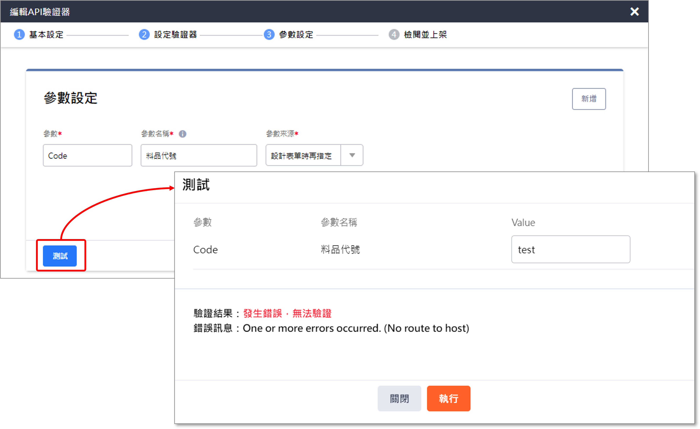
Step4：檢閱並上架¶
在最後的檢閱步驟，你可以對驗證器進行檢查，確保所有設定正確無誤；如果確定沒有問題，你可以選擇[上架]驗證器，這樣表單設計者才能在設計表單時選擇並使用這些驗證器。
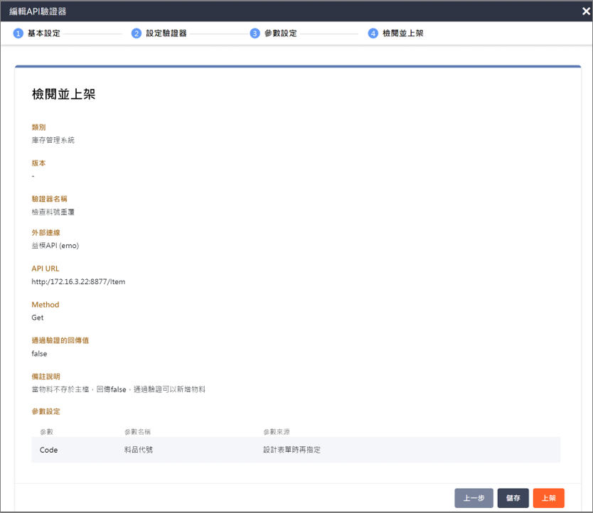
六、如何套用表單驗證器¶
站點加入表單驗證器¶
表單設計者 可以前往[管理者首頁>工作流程>表單維護]，開啟任一張表單的流程畫布，根據組織的表單商業邏輯，在「申請者站點」或「簽核者站點」選擇[加入表單驗證器]。
- 選擇驗證器：下拉選單的資料來源為由BPM管理員所建立表單驗證器主檔，設定時你可以清楚識別SQL驗證器或API驗證器，且也可以點按
 按鈕，來檢視此驗證器的設定值。
按鈕，來檢視此驗證器的設定值。 - 參數來源：若你所選擇的驗證器項目，其參數來源為「設計表單時再指定」時，此時系統會要求你必須設定「參數來源」，而參數來源包含此張表單的欄位項目與表單變數 。
 提醒： 當站點完成加入表單驗證器後，就立即脫離此驗證器主檔，這意味著在此流程站點的驗證器不再受到驗證器主檔變更或修改的影響，而是獨立存在於該表單流程的站點中，該驗證器將始終按照當下所儲存的表單驗證器設定來進行驗證作業。
提醒： 當站點完成加入表單驗證器後，就立即脫離此驗證器主檔，這意味著在此流程站點的驗證器不再受到驗證器主檔變更或修改的影響，而是獨立存在於該表單流程的站點中，該驗證器將始終按照當下所儲存的表單驗證器設定來進行驗證作業。
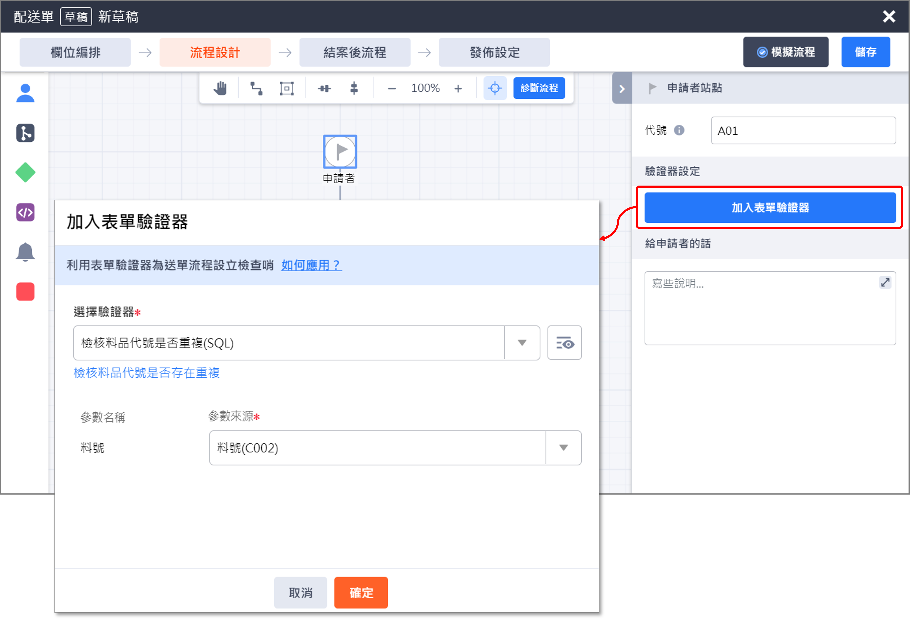
一個站點支援加入多個驗證器，系統將由上至下依序進行驗證作業。
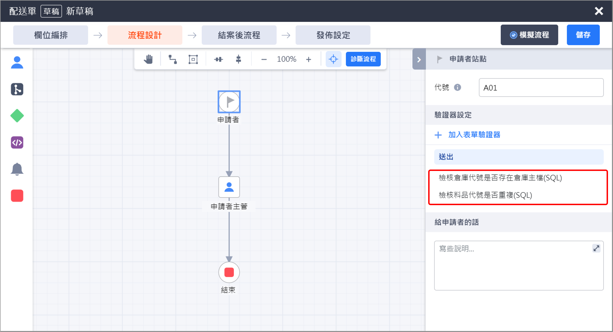
使用者簽核的驗證提醒¶
當表單設計者完成上述所有表單驗證的設定程序，且完成發佈表單後，使用者可以在填寫表單並送出時，進行即時的表單資料驗證；若填寫的資料未通過驗證，系統將無法成功送出表單並顯示相應的錯誤訊息，提醒使用者修正錯誤。
- 使用者申請/簽核表單時，填寫資料沒有通過驗證時，將無法送出表單
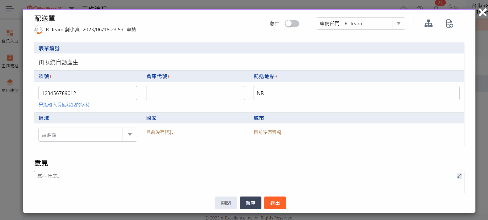